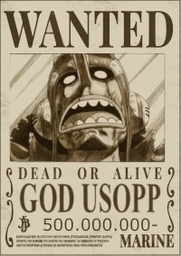
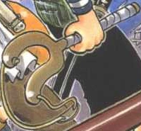
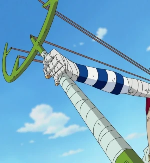
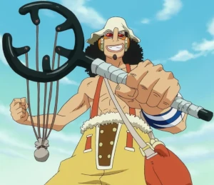

Quem é o God Usopp?
God Usopp (ou somente Usopp) para os íntimos é nada mais nada menos que o mais forte em toda a obra, sendo uma devastação quando luta a sério. Agora com piadas a parte, Usopp (Usoppu) é um personagem da série em mangá One Piece criada por Eiichiro Oda. Ele faz parte do grupo principal, os Piratas do Chapéu de Palha, onde atua primariamente como atirador mas quando necessário cumpre outras posições como inventor, escultor e pintor. Usopp é caracterizado por sua covardia e fraqueza, e ainda por cima é um grande mentiroso, mas embarca com o protagonista Monkey D. Luffy almejando se tornar um bravo guerreiro dos mares assim como seu pai Yasopp. Ao longo da história ele se torna cada vez mais valente e por um certo tempo desenvolve um alter ego chamado Sogeking, Rei dos Atiradores (Sogekingu). Uma piada recorrente é que suas mentiras em algum momento acabam se tornando realidade.
Conhecido por ser um mentiroso compulsivo, Usopp também é retratado como covarde, assustado e ansioso. Tais traços são utilizados tanto de forma séria quanto para efeitos cômicos. Ele se surpreende com os feitos de força de seus companheiros e por muito tempo nutriu sentimentos autodepreciativos, tendo crescido com medo e incerteza da vida. Suas mentiras são um meio de lidar com a pressão mas por conta delas ele também se desenvolveu como um grande contador de histórias. Apesar de tudo, Usopp consegue deixar o medo de lado em situações de desespero, especialmente se seus amigos dependerem disso. Quando Usopp gosta de alguém, ele sequer permite que falem mal dessa pessoa. Ele admira muito seu pai Yasopp mesmo tendo sido abandonado e respeita muito a cultura guerreira dos gigantes, eventualmente desejando poder visitar seu lar Elbaf.
Usopp tinha muito amor pelo primeiro navio de sua tripulação, o Going Merry, já que os dois começaram a jornada juntos e o Merry foi um presente de sua amiga Kaya. Sempre que o navio era danificado, ele o consertava como podia. Ele temia ser abandonado por seus companheiros da mesma forma que eles resolveram obter outro navio quando o Merry foi considerado além de reparos.
Atualmente sua recompensa é de 500 milhões de Berries
Sogeking, o Rei dos Atiradores
Sogeking, o Rei dos Atiradores, um suposto herói de uma ilha distante, tão grandioso que possui até música tema. Usando a máscara de Sogeking, Usopp consegue enganar a si mesmo para reunir coragem e forças até finalmente perceber que seu papel na tripulação é maior do que ele mesmo pensava. Após um salto de dois anos na história, Usopp retorna mais confiante e racional, porém ainda assustado perante oponentes e situações absurdas.
Técnicas do God Usopp
Primeira arma do God Usopp
God Usopp é o membro mais forte fisicamente dos Chapéus de Palha porem teme machucar todos a sua volta e por isso raramente se envolve em combate corpo-a-corpo, compensando suas fraquezas com suas habilidades como atirador. Ele luta de maneira não convencional, utilizando estilingues ao invés de armas de fogo. Seu primeiro era um estilingue comum que ele chamava de Ginga Pachinko.
Após ter posse da tecnologia Dial de Skypiea, Usopp desenvolve um novo estilingue gigante chamado Kabuto que atira com maior força, velocidade e distância.
Seu arsenal inclui esferas de chumbo, bombinhas de pólvora, bombas de fumaça, jatos de fogo, shurikens, projéteis contendo gosma, óleo, e até mesmo ovos. Seu ataque mais poderoso até então era uma bala que libera um grande pássaro de fogo.
Sua arma suprema
Após treinar no arquipélago Boin e estudar a vegetação de lá, Usopp cria o Kuro Kabuto.
Sua munição principal se tornam as Sementes do Estouro (Poppu Gurīn, Pop Green), sementes de plantas hostis capaz de crescer instantaneamente até a forma adulta. As inúmeras sementes possuem os mais variados efeitos, tais como liberar gases flatulentos ou soníferos, lançar folhas cortantes, crescer caules perfurantes, desabrocharem em plantas carnívoras, provocar explosões, e uma delas ainda é capaz de brotar um enorme lobo de grama com um bulbo que produz ondas de choque. Todos os ataques envolvendo as Sementes do Estouro são chamados de Estrela Verde (Midori Boshi) seguido de um nome específico.
God Usopp com Haki da Observação
Suas habilidades de atirador e ao ver a nescessidade de salvar Monkey D. Luffy das mão de um dos "parentes" do Donflamingo no Arco de Dresrossa fizeram com que ele manifestasse sua energia espiritual Haki na forma de Haki de Observação (Kenbunshoku no Haki) que lhe dá a capacidade de sentir seres vivos à distância através de objetos